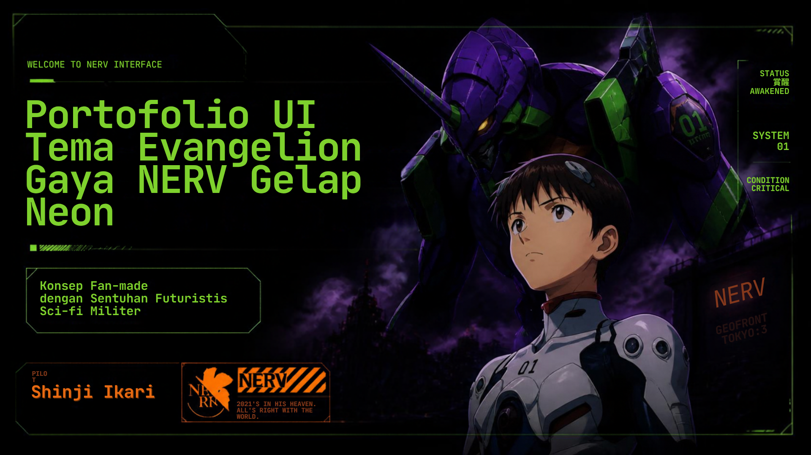

Halaman ini dibangun persis mengikuti gambaran UI Canva dari Nadia — EVA-01 ungu-hijau sebagai elemen utama, bergaya NERV gelap neon, dengan animasi Anime.js.

Lihat EVA-01Pengembang yang membangun pengalaman web cepat, responsif, dan imersif — dari portofolio interaktif sampai aplikasi modern siap deploy ke Vercel.
Frontend modern dengan HTML, CSS, JavaScript, Node.js, dan Anime.js.
Tema gelap neon khas NERV: ungu EVA-01 berpadu hijau terang, kontras dan berani.
Item penting sesuai gambaran UI Canva: unit ungu-hijau ikonik Evangelion.
Model 3D EVA-01 — seret untuk memutar, cubit / scroll untuk zoom.
Karya pilihan dengan standar siap deploy.
Versi ulang mengikuti UI Canva, animasi Anime.js timeline & stagger, responsif penuh.
Antarmuka cepat berbasis Node.js dengan struktur siap Vercel.
Scroll-reveal dan micro-interaction halus di semua ukuran layar.
Keahlian frontend yang dipakai di halaman ini.
Punya proyek atau kolaborasi? Hubungi saya — kita bangun sesuatu yang luar biasa, tanpa memicu Third Impact.
Hubungi Saya